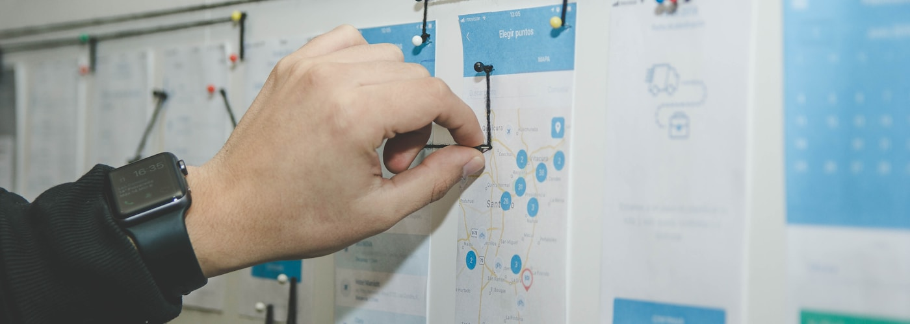

APM portfolio
Research notes, clean metrics, soft launch energy.AI products + user empathy + data + shipping discipline
I'm a Product Lead at Webspiders Group with 3+ years of building digital products people actually want to use. My work sits at the intersection of AI-powered features and deep user research — finding the real problem before writing a single spec. I care about shipping things that make a measurable difference, not just things that look good in a deck.
APM portfolio
Research notes, clean metrics, soft launch energy.Ask better questions before building prettier answers.
"Tiny friction, big drop-off."
Interview insightSummarize, predict, personalize, automate.
I like product work where the answer is not obvious yet: listening to users, finding the sharpest problem, sizing the opportunity, and helping teams choose what to build next.
Product diary

Turn messy user comments into clear needs, patterns, and product questions.
Use metrics to reduce guesswork without losing the human context behind them.
Selected work

Analyzed WhatsApp's strengths, weaknesses, opportunities, and threats, then proposed AI-first usability improvements to reduce message overload.
Expected outcome: 20% drop in notification fatigue score over one quarter
Open PDF case study
Deep-dived into Cvent's event management platform, pricing model, user personas, activation friction, AI strategy, and enterprise event workflows.
Target: Cut time-to-first-event under 30 min for new enterprise users
Open PDF teardown
Studied NUA's app onboarding, period tracker activation, subscription discovery, loyalty loop, and marketplace-to-app retention gap.
Expected outcome: +12% subscription conversion within 2 sprints
Open PDF case studyAI product layer
Users struggle to understand long support conversations.
Summarization plus sentiment detection
Faster context, clearer next action, less manual reading.
Time to resolution
Generate a product angle
Click through lightweight AI concepts to see how I connect a model capability to a real user problem and a measurable product outcome.
Design AI flows where people can review, edit, override, and trust the output.
Translate prompt ideas into workflows, permissions, UX states, and success metrics.
Plan evaluation, guardrails, feedback loops, and model-quality monitoring.
Live AI builds
AI-powered restart kit for women returning to work after career breaks. Generates a personalised LinkedIn summary, interview prep answer, and 30-day action plan in under five minutes — free, no login required.
View live project →Describe your project once and get a full doc suite — PRD, design doc, technical spec, GTM brief, user stories, and release notes — in under a minute. Exports to DOCX, PDF, or Markdown. No login required.
View live project →Interactive product thinking
Strong candidate: validate with a small experiment, then roll out if activation improves.
How I work
Clarify the user, context, pain, business goal, and the decision to be made.
Combine interviews, funnel data, support themes, and competitor patterns.
Prioritize with impact, confidence, effort, risk, and learning value.
Define success metrics, guardrails, rollout plans, and follow-up questions.
Career timeline
Product toolkit
User interviews, problem statements, journey maps, opportunity sizing.
Funnels, cohorts, event taxonomy, SQL basics, AI feature measurement.
PRDs, acceptance criteria, AI workflow specs, roadmap tradeoffs, stakeholder updates.
Wireframes, usability review, information architecture, copy clarity.
Let us talk
I work across product discovery, execution, and AI-enabled experiences. Replace the contact details below with your own, then share this portfolio link.